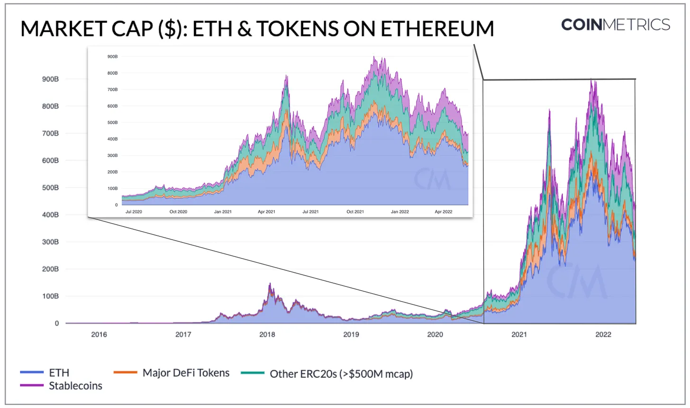
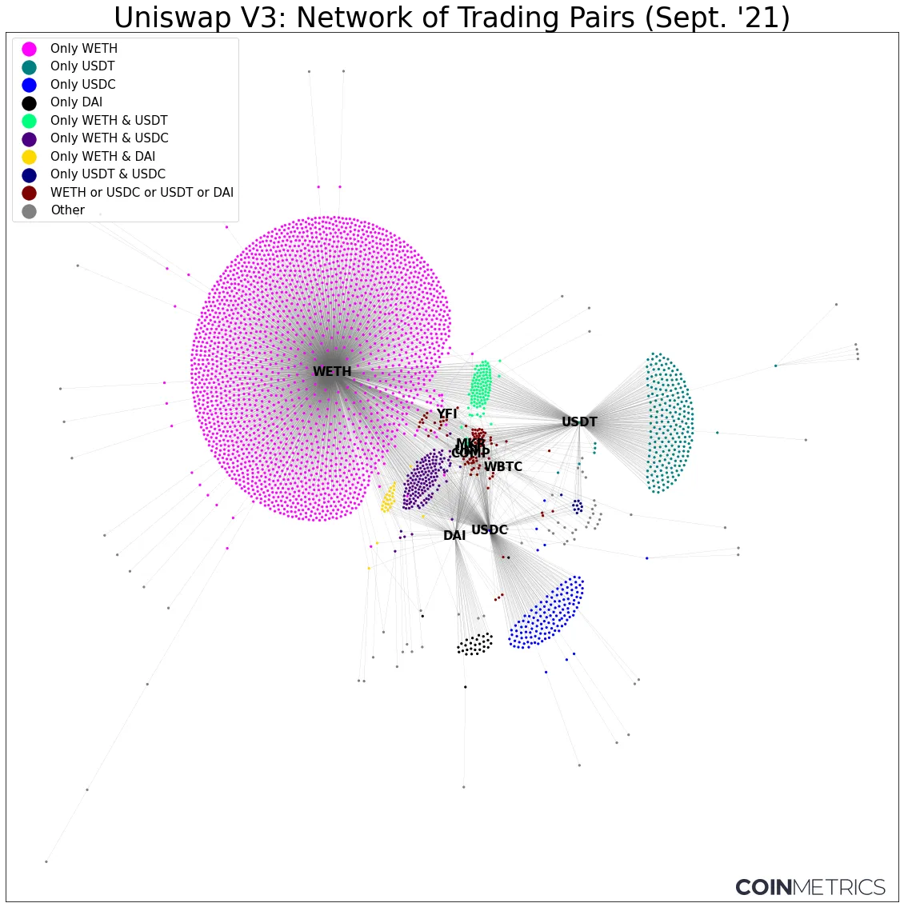

Kyle Waters
independent thinker, researcher, and builder
about
Reputation Oracles: Determining Smart Contract Reputability via Transfer Learning, with Tadhg Looram & Lucas Nuzzi
April 2024
Breaking BFT: Quantifying the Cost to Attack Bitcoin and Ethereum, with Lucas Nuzzi & Matías Andrade
February 2024
The Complexities of Calculating Ethereum's Total Supply
January 2024
Exploring Crypto Asset Supply Transparency (with Bitcoin Suisse)
October 2023
Finding Common Ownership Patterns Across Major Stablecoins with UpSet Plots
August 2023
Simulating the "Surprisingly Popular" Algorithm
August 2023
Decoding the Digital Dollar
July 2023
MINE-MATCH dashboard
June 2023
The Signal & the Nonce: Reshaping our understanding of Bitcoin through new data on mining hardware
June 2023
Covering Ethereum’s 'Shapella' Upgrade
April 2023
Decoding Crypto Pricing
February 2023
Introducing Coin Metrics' datonomy™: A Digital Assets Taxonomy
November 2022
Presenting Coin Metrics' New Ethereum Staking Metrics After "The Merge"
September 2022
Mapping Out The Merge: Understanding Ethereum's Major Upgrade to Proof of Stake & Beyond
August 2022
Analyzing the Impact of EIP-1559 One Year On
August 2022
Analyzing Blockchain Activity by Time of Day with Heatmaps
July 2022
The Ethereum Crowdsale 8 Years Later
July 2022
Exposing 3AC's NFT Fund: Called out anomalous onchain flows of NFTs worth millions as failed crypto hedge fund Three Arrows Capital (3AC) was in the midst of collapse and allegedly moving funds from investors
June 2022

Ethereum's Token Shakeout
May 2022
The BAYC Burn: Breaking Down the Otherside Gas War
May 2022
Art Blocks and the Data of Generative Art
May 2022
Calculating Adjusted On-Chain Volume on Public Blockchain Networks
March 2022
Tracking $45M in Crypto Donations to Ukraine
March 2022
In Search of Lost Robbies
March 2022
What Happens to Airdropped Tokens? Studying the Data Behind the Largest Airdrops on Ethereum
January 2022
Data in the Year of the NFT
January 2022
Introducing Coin Metrics' Bitcoin Wallet Metrics
December 2021
Explaining Some of Crypto’s Biggest Data Anomalies
November 2021
The Rise of NFTs
September 2021

Digging into Uniswap DEX Data
September 2021
East vs. West: Comparing Tether and USDC Usage Patterns
August 2021
Understanding Total Value Locked (TVL)
July 2021
In Search Of An Aesthetics Of Crypto Art (Artnome)
April 2021
Who Is In Your SuperRare Network? (Artnome)
March 2021
Applying Stochastic Gradient Descent and Backpropagation to Linear Regression
July 2020
How Rembrandt And Van Gogh Mastered The Art Of The Selfie (Artnome)
January 2019
New Data Shows Why Van Gogh Changed His Color Palette (Artnome)
December 2018
Inventing The Future Of Art Analytics (Artnome)
November 2018
Building a 3-Layer Neural Network From Scratch with numpy
November 2018